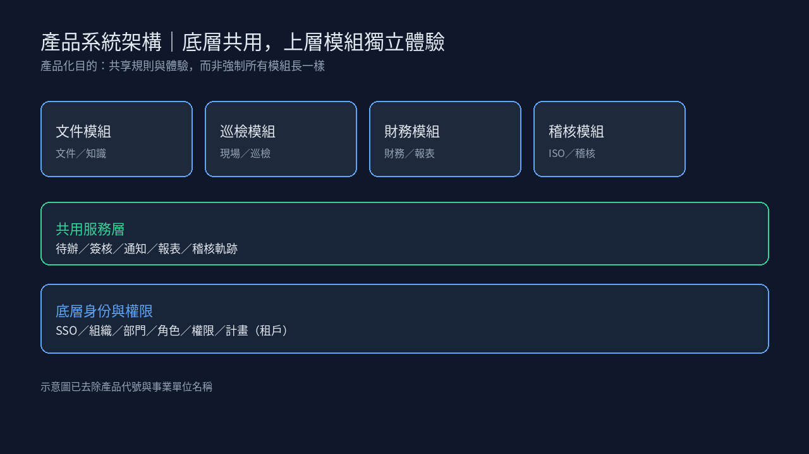
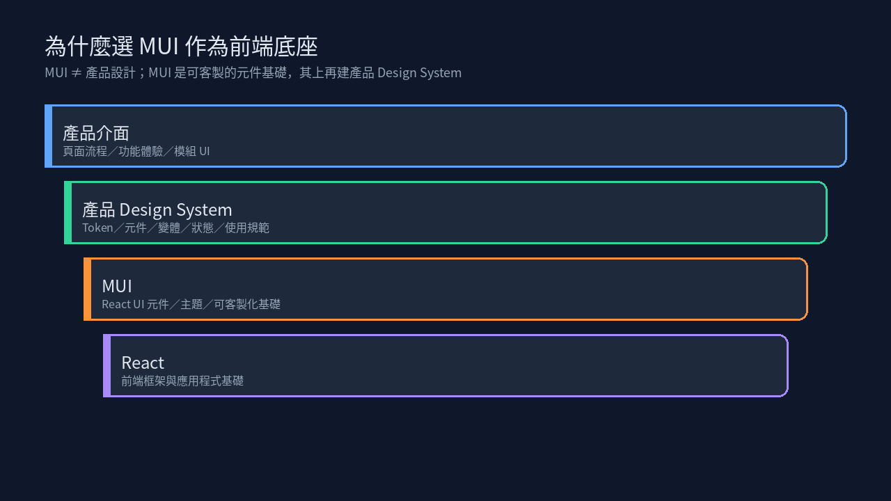
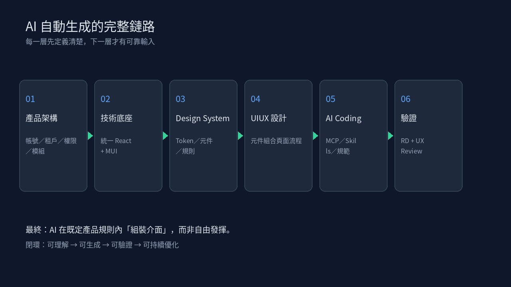
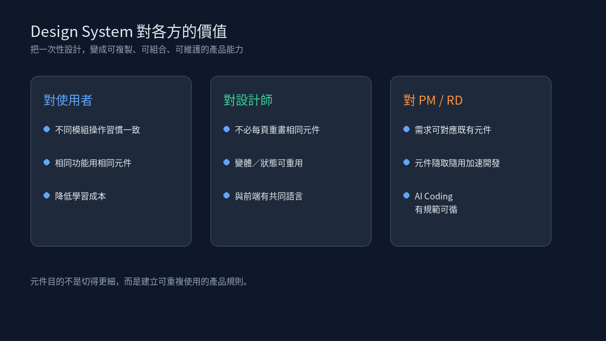

問題
沒有共同產品規則，AI 只能生成「看起來能用」的畫面，體驗分裂、難落地。
解法
骨架 → React+MUI 底座 → Design System → MCP／Skills 驅動 AI 組裝，再經 RD／UX 驗證。
成果
釐清產品化路徑與 PM 決策清單：先建可被 AI 理解的規範，再談生成。
- 提出可對外說明的產品化路徑：骨架 → 前端底座 → Design System → AI 可生成
- 釐清「MUI 是底座、不是產品設計」：其上仍需產品級 Token／規範
- 整理 Design System 對使用者／設計師／PM·RD 的價值，以及六步 AI 生成閉環
- 給 PM 的決策清單：現在要決定的、設計要建立的、最終要達到的
視覺敘事



導入前提｜去中國化：系統整體前端堆疊須採用非中國來源的元件與技術（例如以 React + MUI 作為底座），避免因供應鏈／合規疑慮而無法導入政府單位。

